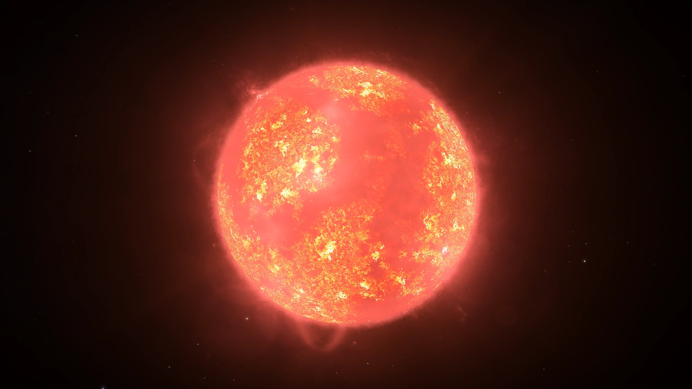
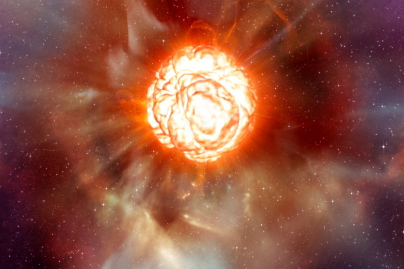
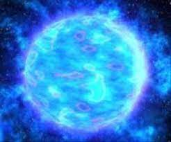

Présentation d'une naine rouge :

- Constellation : Centaure
- Etat : Naine rouge
- Âge : entre 4.85 et 6.8 millards d'années.
- Masse : 2.84 x 10^29 kg soit 0.12 fois la masse du soleil
- Température à la surface : 2769°C
- Diamètre : 200 000 km
- Disantance de la terre : 4,367 années-lumière, c'est l'étoile la plus proche du soleil
- Nébuleuse
- Séquence principal
- Non observé : L'univers n'est pas assez vieux pour contenir des naines rouges ayant fini leur séquence principal
Séquence principale
Les étoiles de type naine rouge sont des étoiles peu massives et de température peu élevée. Elles sont les étoiles les plus abondantes de notre univers observable. On estime que 70 à 80% de toutes les étoiles de la Voie Lactée ainsi que dans d'autres galaxies sont des naines rouges. En raison de leurs faibles masses, elles peuvent brûler durant des dizaines de millards d'années ce qui signifie qu'aucune naine rouge ne s'est encore éteinte depuis le début de l'univers.
Présentation d'une naine jaune :

- Etat : Naine jaune
- Âge : 4,5 Millards d'années
- Masse : 1,9891 × 10^30 kg soit 330 000 fois la masse de la Terre
- Température à la surface: 5500°C
- Diamètre : 1,4 million de km, soit environ 109 fois le diamètre de la Terre
- Distance de la terre : 149 millions de km
- Nébuleuse
- Séquence principal
- Géante rouge
- Naine blanche
Séquence principale
La stabilité d'une étoile est maintenue par un équilibre délicat entre la gravité, qui tente de comprimer l'étoile, et la pression due aux réactions nucléaires à l'intérieur, qui tend à l'expanser. Cette phase, appelée "séquence principale", est celle au cours de laquelle la plupart des étoiles passent la majorité de leur vie. Cette séquence débute lorsque l'hydrogène dans le noyau de l'étoile commence à fusionner pour former de l'hélium. Cette réaction de fusion nucléaire libère une grande quantité d'énergie sous forme de lumière et de chaleur. Pendant la séquence principale, l'étoile maintient un équilibre hydrostatique entre la force gravitationnelle cherchant à la comprimer et la pression issue des réactions nucléaires à l'intérieur favorisant l'expansion. Cet équilibre permet à l'étoile de rester stable. La durée de vie de la séquence principale dépend de la masse de l'étoile. Les étoiles plus massives consomment leur réserve d'hydrogène plus rapidement et ont donc une séquence principale plus courte, tandis que les étoiles moins massives, comme notre Soleil, peuvent rester dans cette phase pendant des milliards d'années. À mesure que l'hydrogène du noyau est épuisé, l'étoile commence à évoluer vers des phases ultérieures de sa vie, la géante rouge...
Géante Rouge
Lorsque l'hydrogène dans le noyau de l'étoile est épuisé, la gravité prend le dessus et comprime le noyau. Lorsque le noyau se contracte, les couches externes de l'étoile, appelées enveloppe, commencent à s'étendre. Cela est dû à la libération d'énergie thermique résultant de la compression du noyau. Pendant l'expansion, la surface de l'étoile (la couche externe) refroidit, ce qui donne à l'étoile une couleur rougeâtre caractéristique. C'est pourquoi on l'appelle une géante rouge. Pendant cette phase, l'étoile peut perdre une quantité significative de masse sous forme de vents stellaires. Ces vents peuvent contribuer à l'enrichissement du milieu interstellaire avec des éléments plus lourds. Les couches externes de l'étoile sont finalement expulsées, créant une nébuleuse planétaire.
Naine Blanche
Pour les étoiles les moins massives, la géante rouge, après avoir épuisé son carburant nucléaire, expulse sa couche externe et évolue en naine blanche. Celle-ci est le noyau résiduel de l'étoile morte. Leur température est très élevée, mais elles n'émettent qu'une faible lumière car elles n'ont plus d'activité de réaction nucléaire. Les naines blanches finiront par s'éteindre dans plusieurs dizaines ou centaines de milliards d'années. On les appellera les naines noires. Actuellement, aucune naine noire n'existe car le temps estimé pour qu'elles s'éteignent est plus long que l'âge actuel de l'univers.
Présentation des étoiles massives:
Séquence principale
Pour une étoile massive, cette séquence principale est similaire à celle d'une naine jaune, mais elle se distingue par un déroulement plus rapide. Les étoiles massives épuisent leur réserve d'hydrogène plus rapidement que les naines jaunes, accélérant ainsi la transition vers la prochaine étape, la supergéante rouge.
Supergéante rouge
Ici aussi, la supergéante est similaire à la géante rouge, mais elle est plus massive et lumineuse. Son destin ultime est de terminer en supernovae, une libération d'énergie colossale qui peut brièvement briller plus intensément que toute la galaxie qui héberge l'étoile. Cependant certaines étoiles extrêmement massives ne passeront pas par l'étape de supergéantes rouge car leur masse est telle qu'elles s'éfondrent en trou noir dès qu'elles manquent de matière pour leur fusion nucléaire. Selon la masse de cette étoile massive, elle laissera comme cadavre stellaire soit une étoile à neutrons, soit un trou noir.
Etoile massive moyenne:

- Constelation : Orion
- Etat : Supergéante rouge
- Âge : Entre 8 et 10 millions d'années
- Masse : 3,282 × 10^31 kg
- Température à la surface : 3227 °C
- Diamètre : 1,23 milliards de km soit 900 fois le diamètre du soleil
- Disantance de la terre : 642,5 années-lumière
- Nébuleuse
- Séquence principale
- Supergéante rouge
- Etoile à neutrons
Etoile à Neutrons
Quand une étoile massive moyenne épuise son carburant, elle subit un effondrement gravitationnel intense. Ce processus résulte de la lutte entre la force de gravité, qui tend à comprimer la matière, et la pression de dégénérescence des électrons, qui exerce une force répulsive. Durant la supernovae, lors de l'effondrement, les protons et les électrons fusionnent pour former des neutrons. La matière est alors principalement composée de neutrons, d'où le nom "étoile à neutrons". Ces étoiles sont extrêmement denses, avec une masse comparable à celle du Soleil mais comprimée dans un volume beaucoup plus petit, typiquement d'ordre kilométrique. Dans le cas de Bételgeuse, il est estimé que lors de sa phase d'étoile à neutrons, son diamètre pourrait être de l'ordre de 20 km. Les étoiles à neutrons présentent des caractéristiques fascinantes, telles qu'un champ magnétique intense et une rotation rapide. Souvent, elles émettent divers types de radiations sous forme de pulsations régulières, dans se cas elles sont appelées pulsars. Pour les plus massives d'entre elles, après la phase de supergéante rouge, elles se transforment en trou noir.
Etoile massive géante.:

- Constelation : Dorade
- Etat :Phase principale
- Âge : 300 000 ans
- Masse : 5,271 × 10^32 kg, faisant de R136a1 l'étoile la plus massive et lumineuse connue de l'univers observable.
- Température à la surface : 50000 °C
- Diamètre : 44 millions de km, soit entre 28.8 et 35.4 fois le soleil
- Disantance de la terre : 163000 années-lumière
- Nébuleuse
- Séquence principale
- On estime qu'elle finira par se transformer en un Trou Noir.
Trou noir
Cette fois-ci, lorsque l'étoile épuise son carburant et ne peut plus soutenir la pression interne contre la gravité, elle s'effondre sous l'effet de sa propre gravité. Cet effondrement est rapide et intense. Le cœur de l'étoile s'effondre rapidement, provoquant une explosion spectaculaire, la supernovae. Contrairement à une étoile à neutrons, où la forte force gravitationnelle force les électrons et les protons à fusionner, dans le cas d'un trou noir, la gravité est si intense que tout se brise. La matière de l'étoile s'effondre vers un point infiniment petit, créant ce que l'on appelle une singularité." Il existe deux types de trous noirs.
- Trou noir stellaire : Si la masse du cœur effondré est inférieure à environ 20 fois la masse du Soleil, il peut former un trou noir stellaire. Ce type de trous noirs conserve la masse de l'étoile d'origine tout en comprimant la matière dans un volume très petit.
- Trou noir supermassif :Pour les étoiles encore plus massives, le processus de formation de trous noirs supermassifs, qui se trouvent au centre des galaxies, est moins bien compris. On pense que cela pourrait être lié à l'accumulation de masse par fusion avec d'autres trous noirs ou par l'accumulation de matière environnante.